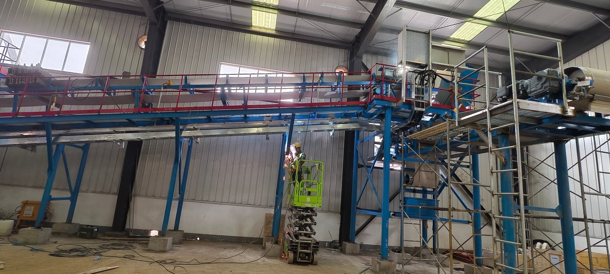
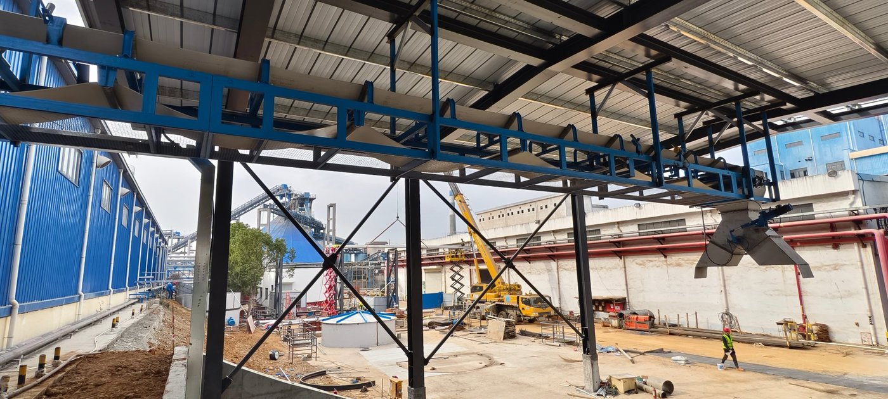
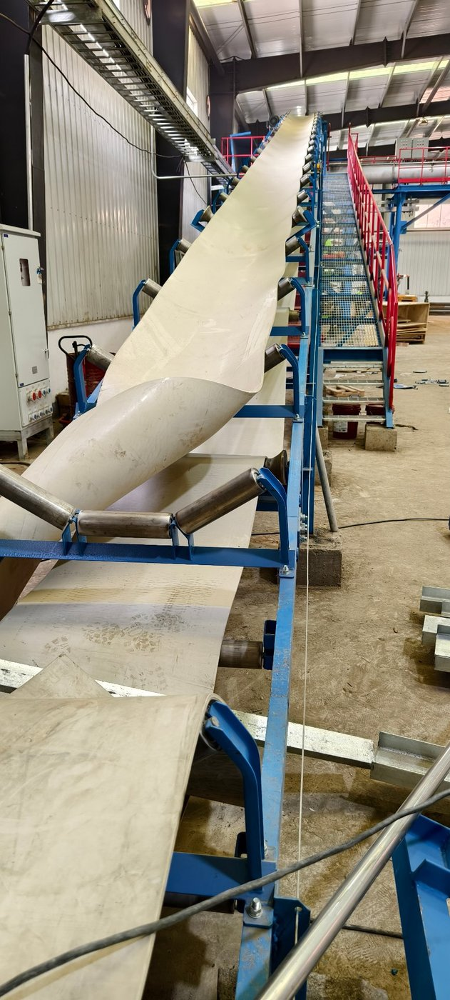
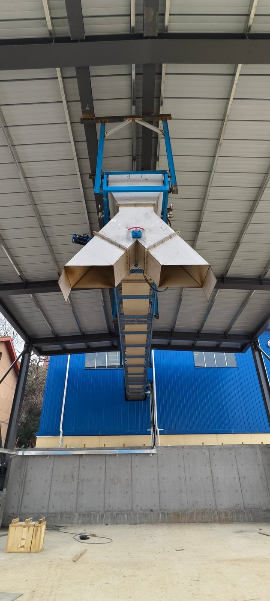
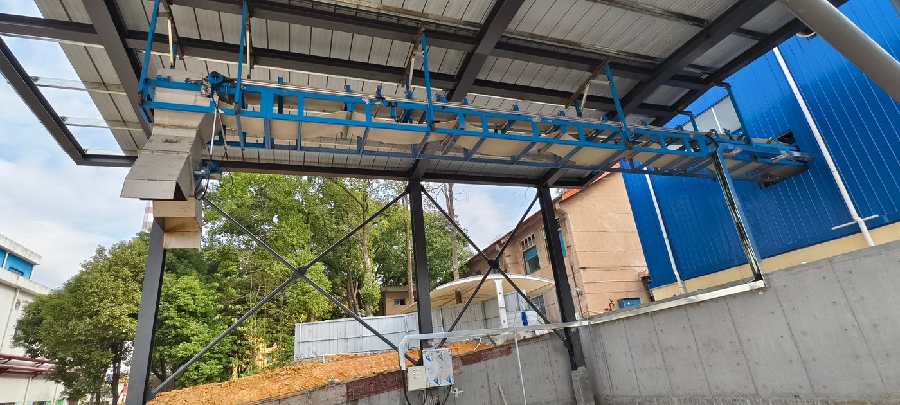

Большинство транспортных проектов перемещают сухие сыпучие материалы: породу, уголь, цемент, удобрения. Влажная целлюлоза — полная противоположность им всем. Она тяжела от воды, связна, волокниста и стремится прилипнуть ко всему, чего касается, — и при этом её нужно перемещать сотнями тонн в сутки, без просыпи, без забивания и без превращения пола цеха в мокрое скользкое месиво. Эта статья — кейс системы транспортировки и хранения влажной целлюлозы, построенной для проекта модернизации крупного целлюлозно-бумажного предприятия в Китае, где существующую линию массы из макулатуры переоборудовали в линию высоковыходной химико-механической массы (ХММ) мощностью 200 000 т/год и добавили новую линию немелованной бумаги культурного назначения мощностью 450 000 т/год. Оборудование склада влажной целлюлозы, показанное на этих фотографиях, введено в пусконаладку под нагрузкой — этап, на котором система работает с реальным материалом и подтверждает, что проектное решение работает.
В этой статье
1. Проект: модернизация целлюлозно-бумажного производства 2. Почему влажная целлюлоза — самый сложный материал на площадке 3. Архитектура системы: от линии массы до отсеков склада 4. Проектирование ленточного конвейера для липкой влажной массы 5. Распределение одного потока по нескольким отсекам 6. Перегрузочные узлы, течки и съём материала с ленты 7. Вода, чистота и коррозия 8. Конструкция, доступ и устройства безопасности 9. Пусконаладка под нагрузкой: что доказывает «прогон с материалом» 10. Почему ЦБК выбирает одного поставщика транспортного оборудования Часто задаваемые вопросы1. Проект: Модернизация Целлюлозно-Бумажного Производства
Проект представляет собой комплексную техническую реконструкцию действующего целлюлозно-бумажного комбината в Китае, выполняемую на работающем предприятии. В нём два основных технологических элемента, а склад влажной целлюлозы находится между ними как материальное звено.
| Элемент | Состав | Значение для транспортировки |
|---|---|---|
| Линия высоковыходной массы | Существующая линия массы из макулатуры мощностью 200 000 т/год переоборудуется в более чистую линию высоковыходной химико-механической массы (ХММ) мощностью 200 000 т/год | Производит влажную массу, которую система хранения должна принять, распределить и буферизовать |
| Линия культурной бумаги | Новая интеллектуальная линия немелованной бумаги культурного назначения мощностью 450 000 т/год с цехом подготовки массы | Потребляет массу; система хранения должна подавать её равномерно |
| Склад влажной целлюлозы | Реконструируемая ёмкость хранения для линии ХММ с собственным транспортным и распределительным оборудованием | Предмет этой статьи — буфер между производством массы и бумагоделательной машиной |
- Действующее предприятие: реконструкция ведётся вокруг уже работающего производства, поэтому новое оборудование нужно монтировать и вводить без остановки остального комбината.
- Крупный публичный проект: модернизация — одна из крупнейших инвестиций в целлюлозно-бумажную отрасль за последние годы, общей стоимостью в миллиарды юаней и со сроком строительства более года.
- Склад — это не склад, а технологический буфер: влажную целлюлозу нельзя просто сложить под навесом. Её нужно принимать, распределять и забирать контролируемым образом, иначе линия массы и бумагоделательная машина вынуждены замедляться друг под друга.
Склад влажной целлюлозы — типичный пример задачи, которая на компоновочном чертеже выглядит как «ещё один конвейер», а при серьёзном отношении к свойствам материала превращается в проектный вопрос. Об этом и пойдёт речь дальше.

Транспортировка влажной целлюлозы2. Почему Влажная Целлюлоза — Самый Сложный Материал на Площадке
Сухие сыпучие материалы с инженерной точки зрения довольно предсказуемы: они текут, имеют стабильный угол естественного откоса и допускают падение из течки без особых проблем. Влажная целлюлоза нарушает почти все эти допущения. Она приходит с обезвоживания и прессования как влажная связная масса — как правило, наполовину состоящая из воды, — а не как свободно текущая гранула.
| Свойство | Влажная целлюлоза | Следствие для конвейера |
|---|---|---|
| Влажность | Очень высокая; груз — частично вода | Тяжёлая загрузка ленты, унос воды, капель и фильтрата, коррозия |
| Связность / липкость | Прилипает к стали, резине и сама к себе | Налипание на течках, роликах и обратной ветви ленты; плохой съём у приводного барабана |
| Волокнистая, тянущаяся структура | Длинные волокна, лепёшки и комья | Материал зависает в течках и наматывается на вращающиеся части; узкие зазоры забиваются |
| Сжимаемость | Насыпная плотность меняется при обращении, под давлением материал спрессовывается | Производительность нельзя оценить по одной цифре насыпной плотности |
| Трение по мокрой ленте | Низкое — груз легко скользит | Ограничивает максимальный угол наклона; гладкая лента не удержит груз на крутом подъёме |
| Температура и биология | Тёплая и влажная, способствует коррозии и образованию слизи | Выбор материалов, мойка и дренаж становятся проектными требованиями, а не уборкой «потом» |
3. Архитектура Системы: От Линии Массы до Отсеков Склада
Система хранения следует за технологическим процессом, а не за одной прямой линией. В общем виде:
Обезвоживание и прессование → приёмный конвейер → наклонная линия → перегрузочный узел → распределительный конвейер над отсеками → разгрузка в отсеки → возврат в подготовку массы.
- Приём: влажная масса из линии подаётся на первую линию конвейера. Точка загрузки рассчитана на связную массу, а не на поток гранул: широкое, крутое, футерованное горло без уступов, где масса могла бы задерживаться.
- Наклонная транспортировка: масса поднимается к уровню кровли склада наклонной лентой. Максимальный угол определяется низким трением влажной массы по ленте, а не стандартной цифрой из каталога.
- Перегрузочный узел: смена направления между линиями происходит в конструкции, вмещающей течку, разгрузочный кожух и доступ для обслуживания — стальная рама, показанная на рисунке 2.
- Распределение над отсеками: один горизонтальный конвейер проходит по длине склада над отсеками. Разгрузочные устройства вдоль него — плужковые сбрасыватели, передвижная разгрузочная тележка или стационарные перекидные течки — сбрасывают массу в тот отсек, который заполняется.
- Хранение и возврат: отсеки буферизуют разницу между равномерным выпуском линии массы и переменным спросом бумагоделательной машины; оборудование возврата подаёт массу в подготовку.

Перегрузочная галерея4. Проектирование Ленточного Конвейера для Липкой Влажной Массы
Издалека конвейер влажной целлюлозы выглядит как обычный ленточный конвейер, но спроектирован он иначе почти в каждой детали. Ниже — параметры, которые важнее всего.
| Параметр | Инженерный фактор для влажной целлюлозы |
|---|---|
| Поверхность и обкладка ленты | Обкладка выбирается по влажному съёму — гладкая, невпитывающая поверхность, с которой груз чисто уходит у приводного барабана. На наклонных линиях, где низкое трение влажной массы заставило бы груз скатываться, применяется лента с перегородками, рёбрами или карманами, удерживающая груз принудительно. |
| Ширина и скорость ленты | Ширина определяется производительностью, реальной насыпной плотностью связного груза и крупностью комьев. Скорость умеренная: быстрая лента больше разбрызгивает воду, легче сходит с оси и сильнее уносит материал — а с влажной массой это хуже, чем с сухим сыпучим. |
| Жёлоб и переходы | Глубокий жёлоб удерживает связный груз по центру, но лента не должна проходить через крутой переход: влажной массе нужны увеличенные переходные участки и большой приводной барабан, чтобы груз сходил, а не заворачивался обратно на ленту. |
| Борта и герметизация | Зона загрузки с резиновыми бортами по всей длине и герметичными кромками удерживает влажный груз на ленте. Здесь герметизация важнее, чем для сухого материала, потому что утечка — это не пыль, а непрерывная струйка массы и воды. |
| Очистители ленты | Первичные скребки плюс вторичная вращающаяся щётка удаляют плёнку массы, которую уносит мокрая лента. Очистители выполняются из нержавеющей стали и настроены так, чтобы снимать плёнку, не прорезая ленту; на влажной массе это рабочий узел, а не аксессуар. |
| Приводы и пуск | Двигатель и редуктор подбираются по загруженному режиму и по тяжёлому влажному пуску. Регулирование скорости позволяет конвейеру согласовываться с темпом выпуска линии массы, избегая рывков и просыпи в точке загрузки. |
| Натяжение и ход ленты | Натяжное устройство с достаточным ходом, чтобы держать усилие в течение срока службы ленты, плюс самоцентрирующиеся и центрирующие ролики, удерживающие мокрый смещённый груз по оси. |
| Материалы и отделка | Смачиваемые части из нержавеющей стали или с подходящим покрытием, без острых внутренних углов, с дренажом, чтобы вода не стояла в конструкции. |
Основные инженерные усилия сосредоточены в трёх местах: в точке загрузки, где связная масса должна войти на ленту без сводообразования и просыпи; на наклонной линии, где трение решает, останется ли груз на ленте; и у приводного барабана, где груз должен чисто сойти, а не вернуться на обратную ветвь.

Наклонная линия5. Распределение Одного Потока по Нескольким Отсекам
Основная задача системы хранения — распределение: один конвейер приходит с массой, и он должен доставить её в разные отсеки, в любом порядке, без машины на каждый отсек. Эту работу выполняют три устройства, и выбор зависит от компоновки и режима эксплуатации.
- Плужковые сбрасыватели (стационарные, по одному на отсек). Плужок идёт по ленте и отклоняет груз в сторону с грузовой ветви в течку над отсеком. Плужок может быть неподвижным или подъёмным (вручную, пневматически или электрически), так что заполненный отсек можно пропустить. Плужки просты и надёжны и подходят для линии отсеков, обслуживаемых с известными интервалами, — но лезвие должно снимать липкий груз с ленты, а разгрузочное отверстие должно быть достаточно большим, чтобы влажная масса не сводообразовалась.
- Передвижная разгрузочная тележка (триппер). Это перемещаемая разгрузочная станция, которая едет вдоль конвейера и может быть остановлена в любой точке. Это правильный выбор, когда точка разгрузки должна смещаться непрерывно или когда отсеков больше, чем может экономично обслужить фиксированный набор плужков. На влажной массе трипперу нужны широкая разгрузочная течка, крутые углы и собственные очистители, потому что триппер, который не может себя очистить, сам становится затором.
- Перекидные течки (многопозиционные). Стационарная течка с заслонкой или поворотным лотком делит один поток между двумя, тремя или четырьмя фиксированными направлениями — многопозиционный разгрузочный кожух на рисунке 4. Они подходят для небольшого числа фиксированных направлений и являются самым простым решением там, где место разгрузки определяет процесс, а не компоновка отсеков.
| Устройство | Лучше всего подходит для | На что обратить внимание |
|---|---|---|
| Плужковый сбрасыватель | Линия отсеков, заполняемых по одному, с позицией пропуска | Очистка лезвия на липкой ленте; разгрузочное отверстие без сводообразования |
| Передвижная разгрузочная тележка | Частая или непрерывная смена точки разгрузки; много отсеков | Самоочистка течки триппера; ход ленты через подвижную станцию |
| Многопозиционная перекидная течка | От двух до четырёх фиксированных направлений по процессу | Широкое горло, крутой угол и низкофрикционная футеровка, чтобы влажная масса шла |
Выбор в этом проекте следовал этим правилам: фиксированный набор точек разгрузки вдоль распределительного конвейера для отсеков и многопозиционные течки там, где один поток нужно было разделить между фиксированными технологическими направлениями.
6. Перегрузочные Узлы, Течки и Съём Материала с Ленты
Для сухого сыпучего материала перегрузочные узлы — это места образования пыли. Для влажной целлюлозы это места, где линия забивается, и где лента не отдаёт груз. Меры, которые здесь важны, в основном противоположны применяемым для сухих пылящих материалов.
- Крутые, гладкие, футерованные течки. Течка для влажной массы устанавливается под углом заметно выше угла скольжения материала по поверхности течки, с низкофрикционной футеровкой, снижающей требуемый угол, чтобы масса не могла прилипнуть. Классический для сухого сыпучего «каменный карман», защищающий течку слоем материала, просто заполнится массой и забьётся, поэтому здесь он не применяется.
- Без уступов и мёртвых зон. Каждый внутренний угол, ступенька и горизонтальная площадка — это место, где влажная масса накапливается, пока не станет пробкой. Течки выполняются с непрерывными крутыми поверхностями и широкими отверстиями, с большими смотровыми люками, чтобы налипание можно было быстро убрать.
- Принудительный съём при разгрузке. Приводной барабан большой, траектория разгрузки спрофилирована так, чтобы груз сходил, а не заворачивался, а скребок очищает ленту после точки разгрузки. Съём груза с ленты — самая важная деталь конвейера влажной массы.
- Контроль волокон и намотки. Волокнистый материал наматывается на вращающиеся части и свисает с кромок. Зазоры вокруг барабанов, роликов и подшипников минимизируются или закрываются кожухами, чтобы волокна не начали намотку, повреждающую ленту или подшипник.
- Обнаружение забивания. Поскольку течка влажной массы может забиться быстро, датчики уровня и движения в ответственных перегрузочных узлах останавливают питающий конвейер в момент прекращения потока — до того, как затор поднимется вверх или засыплет ленту.

Многопозиционная разгрузка7. Вода, Чистота и Коррозия
Система влажной целлюлозы непрерывно производит воду: свободная вода, стекающая из груза, вода, отбрасываемая у приводного барабана, и плёнка массы, которую снимают с ленты очистители. Если эту воду не собирать намеренно, она окажется на полу, под конструкцией и внутри приводов. В этом проекте воду закладывали в проект, а не убирали после.
- Поддоны и сборные лотки под приводным барабаном, зоной загрузки с бортами и каждым перегрузочным узлом, отводящие воду в точку сбора, а не на пол.
- Уклон и дренаж полов вокруг отсеков и перегрузочных конструкций, с точками мойки, чтобы территорию можно было содержать чистой без застоя воды под оборудованием.
- Выбор материалов для влажной среды: нержавеющая сталь или защитное покрытие на смачиваемых частях, горячее цинкование или подходящая система окраски конструкции, герметичные подшипники и внимание к кромкам реза, крепежу и стыкам — местам, куда вода попадает первой.
- Съёмные укрытия и смотровые люки над течками и точками загрузки, чтобы налипание можно было осмотреть и убрать без разборки конвейера.
- Коррозия и биологическое обрастание: поскольку масса тёплая и влажная, поверхности, которые остаются мокрыми, подвержены слизи и ускоренной коррозии. Конструкция, которая дренирует, имеет уклон и сохнет, стоит больше любого покрытия.
8. Конструкция, Доступ и Устройства Безопасности
Распределительный конвейер проходит над отсеками склада, а значит почти все работы по обслуживанию выполняются на высоте и над водой. Поэтому конструкции и доступ вокруг них — часть проекта безопасности, а не украшение.
- Настилы с ограждениями и бортиками вдоль распределительного конвейера и наклонной линии, чтобы осмотр, очистку и ремонт ленты можно было выполнять с защищённой площадки, а не со стремянки или подъёмника.
- Лестницы и площадки у приводных станций, перегрузочных узлов и позиций триппера или плужков, рассчитанные на инструмент и запасные части, которые нужно туда доставить.
- Ограждения вокруг всех вращающихся частей — барабанов, муфт, валов приводов — и вокруг механизма плужка или триппера, где встречаются движущееся лезвие и движущаяся лента.
- Освещение вдоль настила и у каждой точки осмотра, потому что большая часть обслуживания этого конвейера — визуальная.
- Устройства безопасности по всей системе: датчики схода ленты, контроль проскальзывания и скорости, датчики забивания течек, тросовые аварийные остановы вдоль настила и кнопки аварийного останова на каждой станции.
- Блокировки: последовательности пуска и останова сблокированы с линией массы вверху и системой возврата внизу, чтобы остановка в любом месте цепочки не оставляла материал в течке или на ленте.

Плужковый сбрасыватель9. Пусконаладка под Нагрузкой: Что Доказывает «Прогон с Материалом»
Оборудование, показанное на этих фотографиях, введено в пусконаладку под нагрузкой — момент, когда конвейерная система работает с реальным материалом, а не пустой. Это рубеж, отделяющий механически собранную систему от проверенной, и на линии влажной массы именно здесь по-настоящему проверяется проект.
Пусконаладка системы влажной массы идёт в два этапа:
- Прогон без нагрузки подтверждает механическую основу: лента идёт по оси, привод вращается в нужную сторону, натяжное устройство перемещается, скребки выставлены по ленте, устройства безопасности срабатывают, когда должны, и ничего не задевает.
- Прогон под нагрузкой подтверждает систему как машину для обращения с материалом. Подаётся материал, и следующие параметры контролируются до стабилизации линии:
- Ход ленты под нагрузкой: загруженная мокрая лента находится не там, где пустая, поэтому ход проверяют и корректируют при рабочей нагрузке.
- Натяжение и ход натяжного устройства: лента должна держать усилие при полной нагрузке и полной скорости, не исчерпав ход натяжного устройства.
- Разгрузка на каждом отсеке: проверяется каждая позиция плужка или перекидной течки — уходит ли масса с ленты и проходит ли течку, а не прилипает к лезвию и не сводообразуется в отверстии.
- Движение в течках: каждый перегрузочный узел наблюдают на налипание и заторы, а углы течек и футеровки корректируют, если масса зависает.
- Нагрузка привода: ток двигателя при полной нагрузке сравнивают с проектным значением, подтверждая, что у конвейера есть запас, с которым он проектировался, а не меньше.
- Чистота: унос, капель и просыпь проверяют по всей линии; если лента очищается плохо, первым делом проверяют настройку очистителей или поверхность ленты.
- Пуск и останов под полной нагрузкой: конвейер останавливают и снова пускают загруженным, чтобы подтвердить, что привод пускает нагруженную ленту, а наклонная линия удерживает груз.
- Блокировки и аварийные остановы: проверяется последовательность с линией массы и системой возврата, и каждый аварийный останов проверяется в работе.
- Состояние продукта: массу проверяют после транспортировки, чтобы подтвердить, что система не обезводила её чрезмерно и не загрязнила.
10. Почему ЦБК Выбирает Одного Поставщика Транспортного Оборудования
Система хранения влажной целлюлозы — это не одна машина. Это ленточный конвейер, наклонная линия, перегрузочная конструкция, набор разгрузочных устройств, течки, спроектированные под сложный материал, дренаж и мойка, металлоконструкции, настилы, приводы, управление и устройства безопасности — и всё это должно работать как одна линия, где все элементы взаимодействуют. Комбинату выгоднее один поставщик, способный спроектировать весь материальный поток, чем четыре поставщика, каждый из которых правильно поставит свою часть и всё равно оставит разрывы на стыках.
Tianyi Machinery проектирует и производит весь этот спектр: ленточные конвейеры для основной транспортной задачи, цепные конвейеры en-masse и шнековые конвейеры для герметичной или дозированной перегрузки, ковшовые нории для вертикального подъёма, пластинчатые конвейеры для тяжёлых или горячих сред, а также питатели, затворы, пылеуловители и запасные части к ним. Компания поставила оборудование для транспортировки сыпучих материалов заказчикам более чем в 50 странах в отраслях цемента, химии, горной добычи, энергетики, металлургии и новых энерготехнологий, и та же дисциплина, что решает задачу влажной целлюлозы, работает и на этих рынках.
Часто Задаваемые Вопросы
Что такое система транспортировки и хранения влажной целлюлозы?
Система транспортировки и хранения влажной целлюлозы принимает влажную массу из линии, поднимает и передаёт её в склад, распределяет по отдельным отсекам, а затем возвращает в подготовку массы. Это технологический буфер: он развязывает выпуск линии массы и спрос бумагоделательной машины, так что короткая остановка с одной стороны не заставляет другую снижать темп.
Почему влажную целлюлозу нельзя перевозить обычным ленточным конвейером?
Потому что влажная целлюлоза связна, волокниста и влажна — её свойства отличаются от свойств сухого сыпучего материала. Она прилипает к лентам и течкам, зависает в отверстиях, наматывается на вращающиеся части и имеет низкое трение по мокрой ленте, что ограничивает угол подъёма. Обычный конвейер для сухого сыпучего, рассчитанный на ту же производительность, будет просыпать, сходить с оси и забиваться. Поверхность ленты, углы течек, герметизация бортов, очистители и угол наклона должны быть спроектированы под этот материал.
Как влажная целлюлоза распределяется с одного конвейера по нескольким отсекам?
Либо плужковыми сбрасывателями, расставленными вдоль конвейера, либо передвижной разгрузочной тележкой, которая перемещается к заполняемому отсеку, либо стационарными многопозиционными перекидными течками там, где направление определяет процесс, а не компоновка отсеков. Плужки подходят для линии отсеков, заполняемых по одному, с позицией пропуска; тележка — для частой или непрерывной смены точки разгрузки; перекидные течки — для небольшого числа фиксированных направлений. Всем им нужны большие, крутые, низкофрикционные отверстия, которые связная влажная масса не может перекрыть.
Что доказывает пусконаладка под нагрузкой для конвейера влажной целлюлозы?
Прогон под нагрузкой подаёт реальный материал и проверяет систему как машину для обращения с материалом, а не просто как вращающийся механизм. Он подтверждает ход ленты под нагрузкой, натяжение при полной нагрузке и скорости, что масса действительно уходит с ленты и проходит каждую течку, что у привода есть проектный запас, что нет уноса и просыпи, что загруженный конвейер можно остановить и снова пустить, и что блокировки и аварийные остановы работают. Проблемы, которые проявляются только с материалом — зависающая течка, плужок, который не снимает груз, плёнка на ленте, — устраняются до сдачи, а не во время производства.
Какое оборудование Tianyi поставила для этого проекта склада влажной целлюлозы?
Tianyi Machinery поставила транспортное и распределительное оборудование для системы склада влажной целлюлозы: ленточные конвейеры, включая наклонную линию, перегрузочную конструкцию, плужковые сбрасыватели и многопозиционные перекидные течки, спроектированные под связную влажную массу, течки с низкофрикционными футеровками и обнаружением забивания, настилы и устройства безопасности, а также приводы и управление, вместе с поддержкой пусконаладки на этапе прогона под нагрузкой.
Планируете транспортировку влажной целлюлозы или другого сложного материала?
Пришлите нам характеристики материала, влажность, технологическую схему, производительности и компоновку отсеков склада. Наша инженерная команда предложит полный транспортный объём — ленточные, цепные и шнековые конвейеры, ковшовые нории, плужковые сбрасыватели и перекидные течки, питатели, затворы, пылеуловители и запасные части — как единый материальный поток.
Запросить предложение по транспортной системе